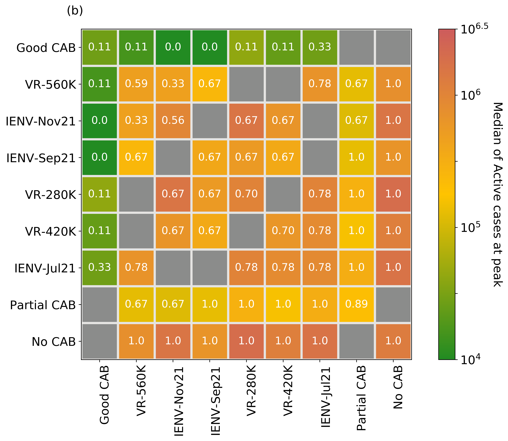
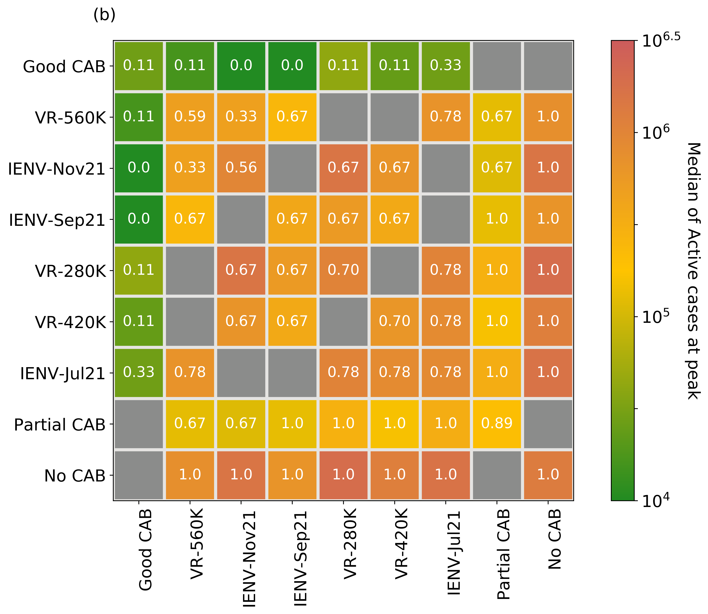

Divij Ghose
Scientific ML and Applied AI researcher, Indian Institute of Science, Bangalore
I am a senior research fellow at the Department of Computational and Data Sciences (CDS), IISc Bangalore, where I work with Prof. Sashikumaar Ganesan as a member of the AIREX Lab. I work at the intersection of finite element methods, uncertainty quantification, and machine learning, with a focus on problems in computational fluid dynamics.
I am a lead developer of the FastVPINNs framework. I have previously worked on implementing the dynamically othogonal field equations scheme for uncertainty quantification in ParMooN for SPADE, funded by the Ministry of HRD. My work on Scientific Machine Learning has been partially funded by Shell Technology Centre, Bangalore.
I graduated with a B.Tech in Mechanical Engineering from the College of Engineering Pune (CoEP), with Honors in Thermal Engineering, at the top of my class. I have received the Forbes Marshall Award for the Most Outstanding Project and the Prof. S.R. Kajale Memorial Medal for the Best Outgoing Mechanical Engineering Student.
Email / CV / Google Scholar / GitHub / Twitter

News

I was one of the organizers of the 1st International Conference on Applied AI and Scientific Machine Learning 2024. Over the course of three days, we hosted leading researchers from academia and industry, including Prof. Karniadakis (Brown), Prof. Anandkumar (Caltech), Prof. Vinuesa (KTH), Prof. Rozza (SISSA), Dr. Heinlein (TU Delft) and Prof. Mishra (ETH). The conference was attended by about 300 participants, with contributed presenations and posters.
I organized the preconference workshop on Scientific Machine Learning for the 1st International Conference on Applied AI and Scientific Machine Learning 2024. I took sessions on PINNs, Neural Operators and our framework, FastVPINNs, for over 200 participants from academia and industry.
Our paper, "FastVPINNs: Tensor-Driven Accdeleration of VPINNs for Complex Geometries", has been accepted for publication in the SIAM Journal on Scientific Computing (SISC)!
Our paper on "Improving hp-Variational Physics-Informed Neural Networks for Steady-State Convection-Dominated Problems" is now out on arXiv!
Two of our papers have been accepted at DTE & AICOMAS, Paris, 2025!
I attended the Indo German Workshop on Hardware Aware Scientific Computing at the University of Heidelberg! We presented our work on FastVPINNs, particularly our new results on solving singularly perturbed PDEs using hp-VPINNs. Thivin won the best poster award for presenting our work on FastVPINNs.
I volunteered as a Machine Learning Specialist to conduct office hours for the Stanford FLAME AI Challenge!
I attended the Shell.ai Scientific Conference 2024!
Our preprint titled "An efficient hp-Variational PINNs framework for incompressible Navier-Stokes equations" is out on arXiv.
Our work on the FastVPINNs library has been published in the Journal of Open Source Software!
Our paper titled "Fast nOd Efficient hp-Variational PINNs framework for p solving the Incompressible Navier-Stokes equations" was presented at ICCFD 2024 in Kobe!
The preprint for FastVPINNs is now available on arXiv.
We presented our new framework, FastVPINNs, at the ICLR 2024 Workshop on AI4Differential Equations In Science, Vienna!
I attended the International Conference on Latest Advances in Computationaland Applied Mathematics, 2024, at IISER Thiruvananthapuram as a contributing speaker.
I am attending the Shell.ai Scientific Conference in Bangalore!
I was part of one of the top teams at the Stanford FLAME AI Challenge!

I was part of the student organizing committee for the Indo-German Conference on Computational Mathematics 2024, at IISc Bangalore.
I attended the NCM workshop on Numerical Methods for Differential Equations at IISER Thiruvananthapuram.

I attended the Gaussian Process Summer School 2021!

I attended the Qiskit Global Summer School 2021!

Our work on "Ensemble forecast of COVID-19 in Karnataka for vulnerability assessment and policy interventions" is now available as a preprint!
Press: Deccan Herald | The New Indian Express
Research
FastVPINNs: Tensor-Driven Acceleration of VPINNs for Complex Geometries
(Under review in SIAM Journal on Scientific Computing)
Library / JOSS Paper / GitHub / Preprint / Presentation at Prof. Karniadakis' CRUNCH Group SeminarVariational Physics-Informed Neural Networks (VPINNs) utilize a variational loss function to solve partial differential equations, mirroring Finite Element Analysis techniques. Traditional hp-VPINNs, while effective for high-frequency problems, are computationally intensive and scale poorly with increasing element counts, limiting their use in complex geometries. This work introduces FastVPINNs, a novel tensorized loss calculation technique that significantly reduces computational overhead and improves scalability. Using optimized tensor operations, FastVPINNs achieve a 100-fold reduction in the median training time per epoch compared to traditional hp-VPINNs. With proper choice of hyperparameters, FastVPINNs surpass conventional PINNs in both speed and accuracy, especially in problems with high-frequency solutions. Demonstrated effectiveness in solving inverse problems on complex domains underscores FastVPINNs’ potential for widespread application in scientific and engineering challenges, opening new avenues for practical implementations in scientific machine learning.
Improving hp-Variational Physics-Informed Neural Networks for Steady-State Convection-Dominated Problems
(Under review in CMAME, * denotes equal authorship)
This work proposes and studies two extensions of applying hp-variational physics-informed neural networks, more precisely the FastVPINNs framework, to convection-dominated convection-diffusion-reaction problems. First, a term in the spirit of a SUPG stabilization is included in the loss functional and a network architecture is proposed that predicts spatially varying stabilization parameters. Having observed that the selection of the indicator function in hard-constrained Dirichlet boundary conditions has a big impact on the accuracy of the computed solutions, the second novelty is the proposal of a network architecture that learns good parameters for a class of indicator functions. Numerical studies show that both proposals lead to noticeably more accurate results than approaches that can be found in the literature.
An efficient hp-Variational Physics Informed Neural Network framework for solving the Incompressible Navier-Stokes equation
(Under review in Computers and Fluids)
We extend the FastVPINNs framework to vector-valued problems, with a particular focus on solving the incompressible Navier-Stokes equations for two-dimensional forward and inverse problems, including problems such as the lid-driven cavity flow, the Kovasznay flow, and flow past a backward-facing step for Reynolds numbers up to 200. Our results demonstrate a 2x improvement in training time while maintaining the same order of accuracy compared to PINNs algorithms documented in the literature. We further showcase the framework's efficiency in solving inverse problems for the incompressible Navier-Stokes equations by identifying the Reynolds number of the underlying flow. This implementation opens new avenues for research on hp-VPINNs in CFD problems, potentially extending their applicability to more complex problems.
A finite element implementation of the dynamically orthogonal field equations scheme for uncertainty quantification
In this work, we employ an efficient and provably accurate Dynamically Orthogonal (DO) field equation method for reducing the stochastic order by ensuring that the mean squared error of the variance of the stochastic field is minimised. By hypothesizing a decomposition of the solution field into a mean and stochastic dynamical component, we derive a system of field equations consisting of a Partial Differential Equation (PDE) for the mean field, a family of PDEs for the orthonormal basis that describe the stochastic subspace where the stochasticity ‘lives’ as well as a system of Stochastic Differential Equations that defines how the stochasticity evolves in the time varying stochastic subspace. These new evolution equations are derived directly from the original SPDE, using nothing more than a dynamically orthogonal condition on the representation of the solution. We apply this method to both linear and non-linear dynamical systems and compare our results with Monte Carlo simulations.
 

Ensemble forecast of COVID-19 in Karnataka for vulnerability assessment and policy interventions
We present an ensemble forecast for Wave-3 of COVID-19 in the state of Karnataka, India, using the IISc Population Balance Model for infectious disease spread. The reported data of confirmed, recovered, and deceased cases in Karnataka from 1 July 2020 to 4 July 2021 is utilized to tune the model’s parameters, and an ensemble forecast is done from 5 July 2021 to 30 June 2022. The ensemble is built with 972 members by varying seven critical parameters that quantify the uncertainty in the spread dynamics (antibody waning, viral mutation) and interventions (pharmaceutical, non-pharmaceutical). The probability of Wave-3, the peak date distribution, and the peak caseload distribution are estimated from the ensemble forecast.
Numerical Prediction of Pressure for Flow around a Cylinder using Particle Image Velocimetry Data
B.Tech ThesisTraditional methods of pressure measurement are usually intrusive in nature, and are rarely able to quantify the entire flow field. We present an accurate, cost-effective and non-intrusive method by computing the pressure field from velocity data obtained using Particle Image Velocimetry. The result can be post-processed to find coefficients of drag and lift. We use two approaches - one that solves the Pressure Poisson equation over the entire domain, and another that integrates the pressure gradients calculated using the Navier-Stokes equation. Moreover, unlike others, we use a single-Laser PIV combined with a novel shadow correction technique, which makes our system more accesible.
Computer Aided Design and Analysis of Powertrain Components
As an R&D Engineer at Bajaj Auto, I was involved in the CAE analysis and optimization of engine and electric vehicle components. Such CAE methods included bore distortion analysis of engine cylinders, factor of safety calculation and weight optimization of connecting rods and crankshafts, thermal analysis of Electric Motor Control Units, and noise and vibration studies, for brands like KTM, Husqvarna, Triumph and Bajaj.
Experience
Data Scientist
Senior Research Fellow
AI for Research and Engineering eXcellence (AIREX) Lab.
Teaching Assistant
Applied AI: Building Practical and Scalable ML Systems; Artificial Intelligence and Machine Learning
Research Assistant
Computational Mathematics Group & Quantifying Uncertainty in Engineering, Science & Technology Lab.
Teaching Assistant
Introduction to Computing for AI/ML
Assistant Manager
Bajaj Auto R&D, Powertrain Design and NVH-CAE
Engineering Intern
Larsen & Toubro Electrical & Automation